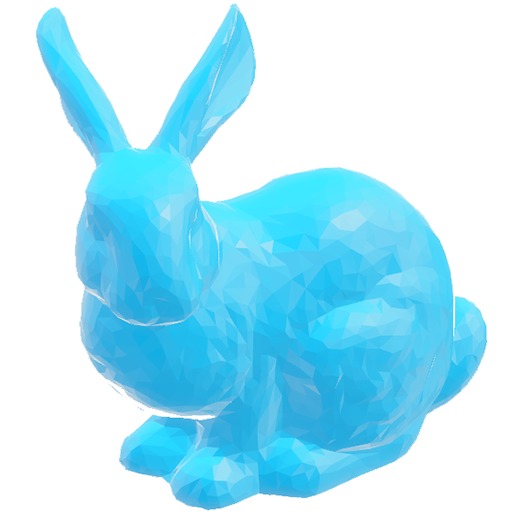

csci-371 computer graphics
professor james bern
lecture mon & thu 2:35 - 3:50 pm
lab -02 tue 1:00 - 2:30 pm
lab -03 tue 2:30 - 4:00 pm
schedule
homeworks must be submitted by 10:00 am to glow in order to be graded
week 0
thu lecture
hw0 out
week 1
mon lecture
tue lab
thu hw0 due
lecture
hw1 out
week 2
mon lecture
tue lab
thu hw1 due
lecture
hw2 out
week 3
mon lecture
tue lab
thu hw2 due
lecture
hw3 out
Syllabus
Grading: Homework (70%; all weighted equally), Exams (30%; 15% Midterm, 15% Final).
Exams: The midterm will cover material from the first half of the course; the final will primarily cover material from the second half of the course, but may build upon material from the first half of the course.
Homework: Late homework will not be accepted. Your lowest scoring homework is automatically dropped.
Health/Accessibility Resources: Students with disabilities or disabling conditions who experience barriers in this course are encouraged to contact me to discuss options for access and full course participation. The Office of Accessible Education is also available to facilitate the removal of barriers and to ensure access and reasonable accommodations. Students with documented disabilities or disabling conditions of any kind who may need accommodations for this course or who have questions about appropriate resources are encouraged to contact the Office of Accessible Education at oaestaff@williams.edu.